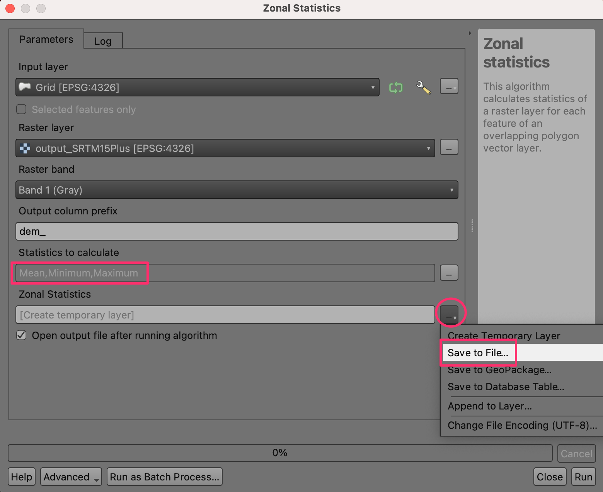
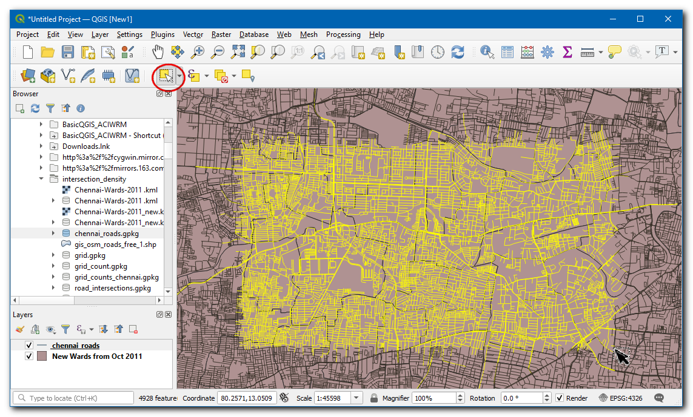
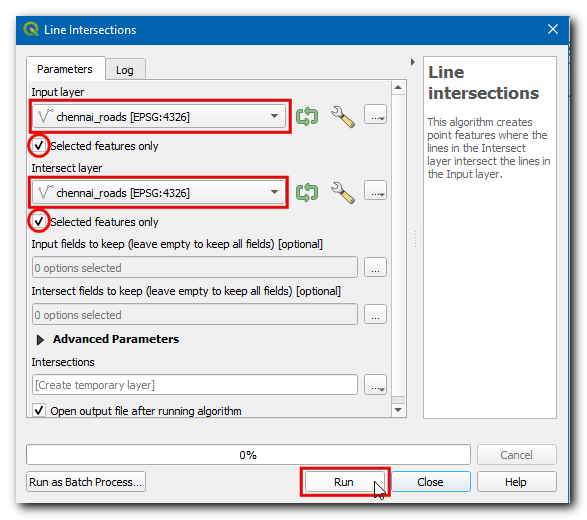
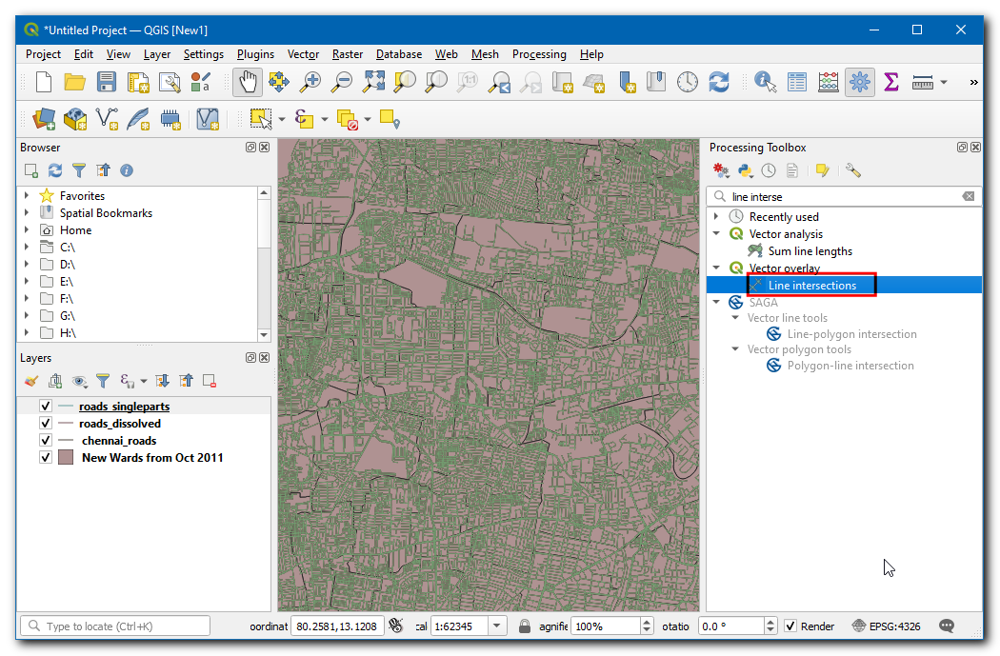
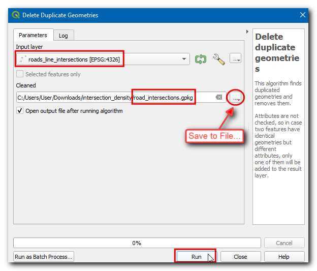
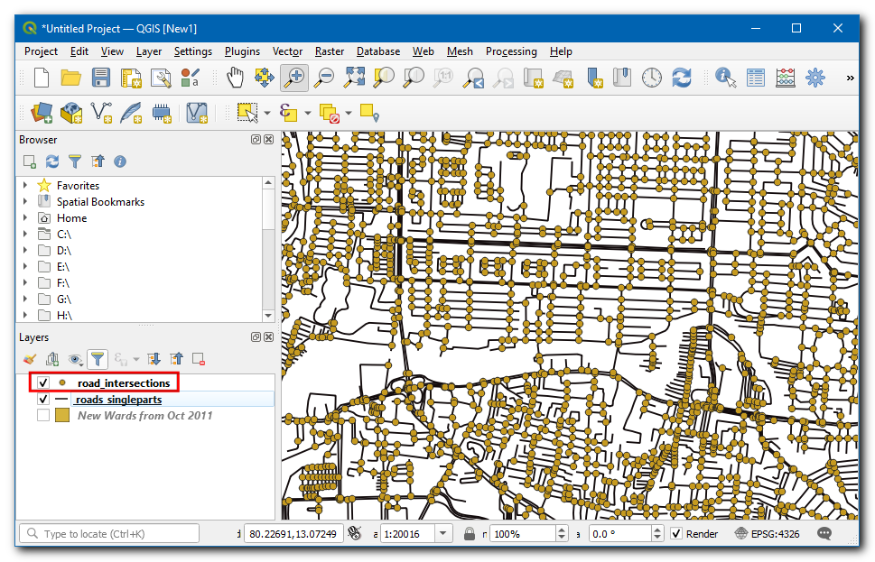

Calculating Street Intersection Density (QGIS3)¶
Street intersection density is a useful measure of network connectivity. One can extract and aggregate street intersections over a regular grid to calculate the density. This analysis is commonly used in transportation design as well as urban planning to determine walkability of neighborhoods. With the availability of global street network dataset from OpenStreetMap and QGIS, we can easily calculate and visualize intersection density for any region of the world.
Overview of the task¶
In this tutorial, we will take OpenStreetMap road network data and calculate the street intersection density for the city of Chennai in India.
Other skills you will learn¶
How to download OpenStreetMap data as shapefiles and clip it to your area of interest.
How to create grids in QGIS.
Get the data¶
We will use the data from opencities to get the city boundary for Chennai and, then the road network data from OpenStreetMap Data Extracts for India.
Download the City Boundary¶
Visit the opencity website, then search for “Chennai wards map”.

Click on the first link and download the data in KML format. A layer
Chennai-wards-2011.kmlwill be downloaded.

Download the Road Network¶
Visit the OpenStreetMap Data Extracts download server by GEOFABRIK. For this tutorial, we need the data for the city of Chennai in India. Click Asia.

Now in sub-regions, select India.

The
india-latest-free.shp.zipis the file we are looking for click it to download, this data can be downloaded in other formats also as per requirement.

This is a large download containing an extract of data for the entire country. Unzip the
india-latest-free.shp.zip. You will get many shapefile layers.

Clip the Road Network to the City Boundary¶
We will now clip the country-level roads layer to our area of interest. Open QGIS, and drag and drop the
Chennai-wards-2011.kml.

Instead of opening a large layer in QGIS, we can directly read it from the disk and clip it. Open the Processing Toolbox and locate the algorithm. Double-click to open it.

In the Input layer select the
…and click on Browse for Layer…

Navigate to the directory where you downloaded the OpenStreetMap data and select
gis_osm_roads_free_1.shp. In the Overlay layer chooseNew Wards from Oct 2011. Then click…in Clipped and select Save to File…, browse to a folder where you want to save the results, enter the name aschennai_roads.gpkg, and click Run.

Once the processing finishes, a new layer
chennai_roadswill be loaded in the canvas.

For convenience, you may directly download a copy of the clipped dataset from the link below:
Data source: [OPENCITIES] [GEOFABRIK]
Procedure¶
Now both layers used for the calculation will be available, if you have downloaded the data, then locate the
Chennai-Wards-2011.kmlandchennai_roads.gpkgin Browser, then drag and drop them on the canvas.

The first task is to extract the road intersections. This can be done using the built-in Line intersections tool. Let’s test this on a small subset first to see if the results are satisfactory. Select the roads layer, and use the Select features by Area tool to draw a rectangle and select a few roads.

Open the Processing Toolbox and locate the algorithm. Double-click to open it.

Select
chennai_roadsas both Input layer and Intersect layer. Make sure to check the Selected features only. Click Run.

A new layer
Intersectionswill be added. You will notice that while most intersection points are correct, there are some false positives. This is because the algorithm considers intersections of each line segment as a valid intersection. But for our analysis, we need to extract only the intersections when 2 or more streets intersect.

Remove the Intersections layer and click Deselect features from all layers button to remove the selection. We will now merge all adjacent road segments, so the segments between intersections are merged into a single feature. Open the Processing Toolbox and locate the algorithm. Double-click to open it.
Select
chennai_roadsas the Input layer. Enter the Dissolved output layer name asroads_dissolved.gpkg. Click Run.

The resulting layer
roads_dissolvedhas all the road segments merged into a single feature.

Next, open the Processing Toolbox and locate algorithm. Double-click to open it. Select
roads_dissolvedlayer as the Input layer. Enterroads_singleparts.gpkgas the Single parts output. Click Run.

The resulting layer
roads_singlepartswill have all adjacent segments merged, remove theroads_dissolvedandchennai_roadslayers. Now, open the Processing Toolbox and locate the algorithm. Double-click to launch it.

Select
roads_singlepartsas both the Input layer and the Intersect layer. Name the Intersections output layer asroads_line_intersections.gpkg. Click Run.

Opomba
This is a computationally intensive operation and may take a long time depending on your computer processing capacity.
The resulting layer
roads_line_intersectionsnow has all intersections correctly identified. But it is still not perfect. Use the Select features by Area tool and select any intersection. You will see that at each intersection there are few duplicate points from adjacent segments. If we use this layer for further analysis, it will result in an inflated number of intersections. Let’s remove duplicates, open the Processing Toolbox and locate the algorithm. Selectroads_line_intersectionsas the Input layer and enterroad_intersections.gpkgas the Cleaned output layer. Click Run.

The new
road_intersectionslayer has the correct number of road intersections extracted from the source layer. Right-click the oldroad_line_intersectionslayer and select Remove layer to remove it.

We will now compute the density of points by overlaying a regular grid and counting points in each grid polygon. We must reproject the data to a projected CRS so we can use linear units of measurements. We can use an appropriate CRS based on the UTM zone where the city is located. You can see UTM Grid Zones of the World map to locate the UTM zone for your city. Chennai falls in the UTM Zone 44N. Open the Processing Toolbox and locate the algorithm. Double click to open it.

Select
road_intersectionsas the Input layer. Search by clicking the globe icon next to Target CRS and selectEPSG:32664 - WGS 84 / UTM zone 44N. This is a CRS based on the WGS84 datum for the UTM Zone 44N. Enter the Reprojected output layer asroad_intersections_reprojected.gpkg. Click Run.

Once the processing finishes and the
road_intersections_reprojectedlayer is added, right-click and select Layer . And remove theroad_intersectionslayer.

Project CRS will be updated in the bottom right of the window. The purpose of this step to ensure that all layers are displayed in the CRS of new layer. We are now ready to create the grid using the
road_intersections_reprojectedas reference. Open the Processing Toolbox and locate the algorithm. Double click to open.

Select Grid type as Rectangle (Polygon). Click the
...button in Grid extent and select .

Select the Project CRS as the Grid CRS. We want to create a grid of 1km x 1km, so set both Horizontal spacing and Vertical spacing as
1000meters. Save the Grid output layer asgrid.gpkg. Click Run.

The
gridlayer containing rectangular grid polygons will be created. We can now count the number of points in each polygon, but since our layers are large, this process can take a long time. One way to speed up spatial operations is to use a Spatial Index. Open the Processing Toolbox and locate the algorithm. Double click to open it.

Select
gridlayer and click Run, now the layer will have a spatial index which can boost the performance of computation with this layer.

Open the Processing Toolbox and locate the algorithm.

Select
gridas the Polygon layer androad_intersections_reprojectedas the Points layer. Save the Count output layer asgrid_count.gpkg. Click Run.

The resulting layer
grid_countwill have an attribute NUMPOINTS which contains the number of intersection points within each grid. There are many grids with 0 points. It will help our analysis and visualization to remove grid polygons that contain no intersections. Open the Processing Toolbox and locate the algorithm.
Select
grid_countas the Input layer, then selectNUMPOINTSin Selection attribute,>in Operator and enter0as the Value. Save the Extracted (attribute) output layer asgrid_counts_chennai.gpkg. Click Run.
The resulting layer
grid_counts_chennaiwill have grid polygons over the Chennai city and contains the number of road intersections as an attribute for each polygon. Remove all layers exceptgrid_counts_chennai.

Let’s clean up the attribute table of our data layer. The preferred method to make any changes to the attribute table is to use a processing algorithm called Refactor Fields, open the Processing Toolbox and locate the algorithm. Double-click to open it. Click on any row in the Field Mapping section to select it. You can hold the Shift key to select multiple rows, select all fields except fid and NUMPOINTS. Click the Delete selected fields button.

Rename the NUMPOINTS field as
intersection_densityand save the layer asroad_intersection_density.gpkg, click Run.

Let’s style this layer to view the density of each grid, select the
road_intersection_densitylayer and click Open the Layer Styling Panel. Select Graduated renderer, and in Values select Intersection Density, a Color ramp of your choice, set the classes to7and click Classify.

In the values enter
0-50,50-100,100-150and so on up to300 - 350. You have now created a map showing intersection density across the city.